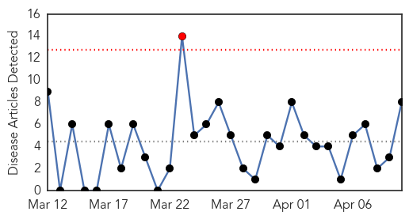
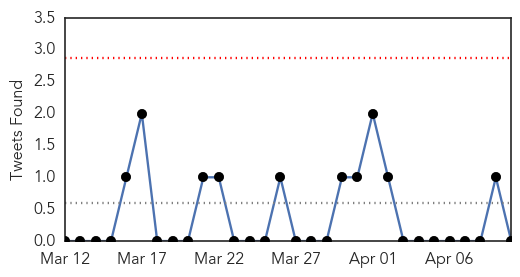
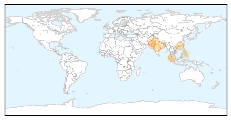
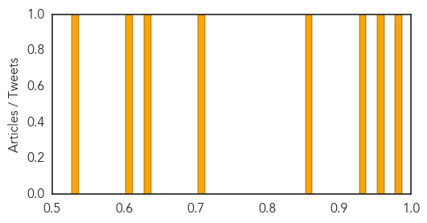

Meningitis
30-Day Web Trend
0 alerts, 0 warnings

30-Day Twitter Trend
0 alerts, 0 warnings

Article Locations

Article Confidences

Top Articles:
- 0.996
- Experts warn of potentially deadly tick-borne illness similar to Lyme disease
- 0.989
- "Emerging" Tick-Borne Virus Found In Connecticut
- 0.830
- Meningococcal meningitis confirmed as cause of death in Broad Run High School student Madison Small - Story
- 0.818
- United Nations Warns the Situation in Yemen Continues to Deteriorate
- 0.815
- Broad Run Student Died of Meningitis: Report
- 0.781
- UN Warns Yemen Situation Continues to Deteriorate
- 0.760
- Loudoun confirms meningitis death; no sign of wider outbreak
Top Tweets:
-
No tweets found for Apr 10, 2015
Dengue Fever
30-Day Web Trend
1 alerts, 0 warnings

30-Day Twitter Trend
0 alerts, 0 warnings

Article Locations
Article Confidences
Top Articles:
- 0.978
- Update on number of dengue fever cases
- 0.966
- 29 dengue fever cases reported in Mauritius
- 0.941
- Dengue deaths rise by 8 in Malaysia
- 0.870
- Dengue is down, this year too - Pakistan
- 0.719
- Schools to face music over dengue defiance
- 0.646
- Docs’ training in handling AES cases starts at PMCH
- 0.615
- ‘Nishtar among three dengue sensitive towns’
- 0.545
- Anti-malaria campaign launched in Cebu
Top Tweets:
-
No tweets found for Apr 10, 2015